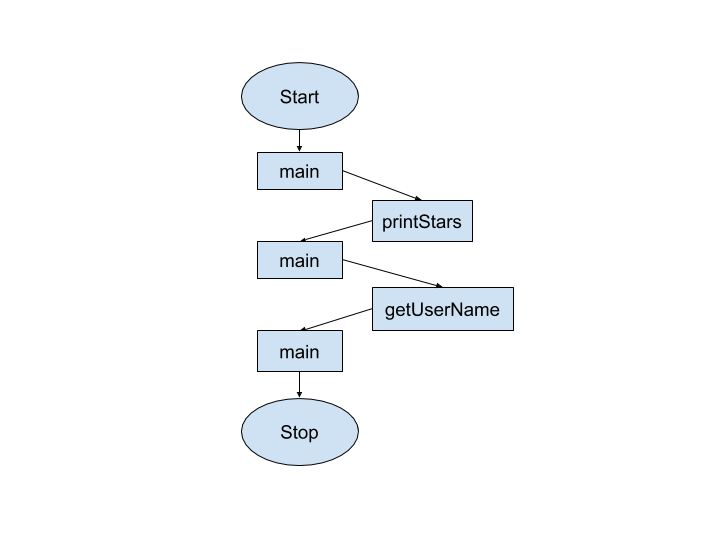

A Guide to Java
A Guide to JavaChapter 6
Adding More Methods
Recall that a method is essentially a chunk-- or module-- of executable code. So far, we have only used one method, called main. Why do we need to write public static void main(String[] args)? This is called the method header (or signature). It provides information about how the method functions. In this chapter, you will learn how to write other methods in addition to main.
You often will want to break your code up into smaller chunks. For one thing, it makes your code easier to read and to debug. For another, you often have code that you need to reuse repeatedly. You can accomplish this by putting your code into separate methods. A class can have multiple methods that we can execute. To execute a method, we need to call (or invoke) it from another method.
The main. method is called automatically (when it is present-- you will see later that not all classes have a main method). All other methods have to be called (or invoked) by another method. Calling a method involves stating its name, followed by (). So, the main method might call another method to perform a certain task, like so:
public class MethodDemo {
public static void main(String[] args) {
printStars(); //runs the code in the printStars method
getUserName(); //runs the code in the getUserName method
}
//the main method is now complete
public static void printStars(){
System.out.println("**************************");
}
public static void getUserName(){
Scanner keyboard = new Scanner(System.in);
System.out.println("Enter your name");
String name = keyboard.nextLine();
keyboard.close();
}
}
Execution Flow
How will the code in the previous example execute? A flowchart is a helpful visual aid to use here.
- The main method always runs first.
- It will run from top to bottom (of main, not of the whole class).
- When it encounters a call to another method, such as printStars(), the compiler looks for a method with that identifier.
- It then “leaves” the main method, and executes the code in printStars(). When printStars is done executing, it goes back to (returns to) main and continues on.
- It’s important to note that the “end” of the code (in terms of execution) above is actually on line 6, not line 19.
- It does not matter what order the methods are written in. The main method can come first or last (or even in the middle, but that would make the code hard to read).
- The other methods likewise can be written in any order. The compiler sees each method as a separate chunk of code.
Return Values
Some methods provide a result that is passed back to the calling method. What does this mean? In everyday life, consider the difference between asking someone to “close the door” versus “tell me your age.” Unlike the first command, the latter requires a response (in this case, the person’s age).
In programming, sending a value back to the calling method is called returning the value.
What if, in the example from the previous section, the main method needed to do something with the name inputted to the getUserName method? Because the variable name was declared inside the getUserName method, it is not “visible” to the main method. Therefore, getUserName has to explicitly send the value of name back to the main method.
In a method header, void means that the method does not return a value (it just “does something” without providing a result-- as in the “close the door” analogy above or the printStars method in the previous example). If there is a return value, we replace void with the type of data it will return to the calling method. This can be a primitive type or reference type (such as String).
For example,
public static int methodA() //this method will return an int
public static boolean methodB() //returns a boolean
In our earlier example, we would replace the header
public static void getUserName()
with
public static String getUserName()
We are now required to use the return keyword, followed by a value appropriate to the return type in the header. Here is how we might rewrite the getUserName example to include a return value.
Notice how the userName variable is assigned the value returned by the getUserName method, so it must be of a compatible type (in this case, String).
One more note about the word return. In addition to returning a value to the method that called it, return also indicates that a method returns control to the calling method (meaning that the next line in the calling method will now execute). This is true of all methods, including void methods (which return control when they are done excecuting with requiring the return keyword).
Parameters
We’ve seen that a called method can return values to the method that invoked it. How about the other way around? What if a method needs information from the calling method in order to run? For example, consider the difference between the commands “Sharpen your pencil” and “Open your book to page...” You have enough information to proceed in the first case (assuming you know how to sharpen a pencil), but in the second, wouldn’t you need to know which page (as in, “Open your book to page 174”)?
Values passed to methods (such as the 174 above) are called arguments. In the method header, variables that receive values from arguments are called parameters. . We've already worked with these when, for example, when we were working with the nextInt method of the Random class. If we have a random number generator called gen and we write gen.NextInt(7), 7 is the argument passed into the parameter for the nextInt method. When we write our own methods, we indicate the type of each parameter and choose an identifier (variable name) inside the parentheses at the end of the method header. Note that parameter variables are local to the method (meaning that other methods cannot access them).
Let’s look at an example:
public static void setAge(int age)
is a method designed to set the value of someone’s age (which we’ll then store in a variable called userAge). In order for this method to make sense, we’d need to know what age value to use. We write int age in parentheses, meaning an integer needs to be provided when we call this method.
public static void setAge(int age) //age will hold the value passed to this method
{
userAge = age;
}
To call the setAge method, we now would write something like
setAge(19); //in the method call, we simply provide any integer as the argument
or
int newAge = 47;
setAge(newAge);
Note that we don’t write the type when calling the method (e.g, it’s not setAge(int 19).
Also note that if we were to write setAge() or setAge(20.5), we would get an error, because the method header requires an int argument, which neither of these provide.
In Java, a method can only return (at most) one value, but it can have multiple parameters. You must specify both the type and an identifier for each parameter (even two of the same type). For example, you might have:
public static double findSum(int a, int b, double c)
{
return (a+b+c);
}
Notice how this method has three parameters and returns a double value (the sum, in this case).
To use this method, we might write
double x = findSum(5, 9, 2.8);
Note how we are storing the result of the method call into a double variable (x), which matches the return type.
Arguments passed by value
One tricky aspect of using methods is understanding that in Java, arguments are always "passed by value." This means that the method makes a copy of the value passed. But what is this "value"?
For primitive types, it's what you expect. For example, given double x = 3.4, the value of x is 3.4.
For non-primitive types, the value is essentially a reference to the object. So, given String s = "hello"; the "value" of s is not "hello"; rather, it might look something like 19ac0130 (where this a reference to where the String is stored).
Parameters and return values in documentation
Note that when you are reading documentation for classes that you are importing, methods are written the same way (these examples are from the String class):